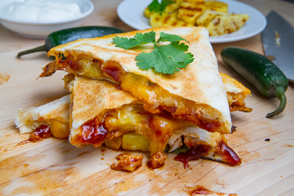

Barbecue Chicken Quesadilla

Barbecue Chicken Quesadilla is a flavorful dish made with tender chicken tossed in smoky
barbecue sauce, melted cheese, and toasted tortillas. Crispy on the outside and cheesy
on the inside, it’s a quick and satisfying meal perfect for any time of day.
Ingredients
- Flour tortillas
- Cooked chicken (shredded or diced)
- Barbecue sauce
- Cheddar or mozzarella cheese (shredded)
- Onion (thinly sliced)
- Bell pepper (optional)
- Butter or oil (for cooking)
Steps
- Mix cooked chicken with barbecue sauce.
- Heat a pan and lightly grease it.
- Place a tortilla in the pan and add chicken and cheese.
- Top with another tortilla and cook until golden.
- Flip and cook until cheese melts.
- Slice and serve hot.
Home